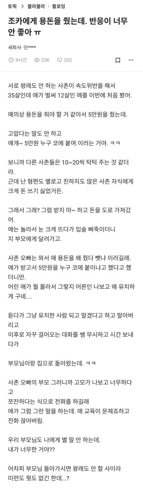

용돈 5만원 줬더니 조카 반응
댓글
놀랍게도 요즘 12살은 "누구 코에 붙여" 라는 표현 자체가 뇌에 없음
그런 표현을 안쓰지
시발 존나 적네 이러지 ㅋㅋ 조족지혈 새발의피 개미똥구멍도 모를듯
의외로 그런 표현을 썼다면 부모, 특히 자기 엄마한테 배웠을 가능성이 높고 그래서 오히려 더 그럴싸 해보임.
콩 심은 데 콩 나거든
나는 디게 실망한 표정 짓고 저 지랄 하길래 마빡에 딱밤 때림
금액 상관없이 어른들이 뭘 주면 감사했는데
감사하는 마음조차 안보이니 열받더라
유사 사례는 있을 수 있다 : Yes
하지만 이 글은 주작이다 : Maybe Yes
새회사특: 주작글쓸려고 만듬
10살 애들 5만원이면 눈돌아가던데
많이주든 적게주든 5만원 보는 순간 눈돌아감 ㅋㅋ
예전에 5천원으로 본 기억이 나는데 ㅋㅋㅋㅋㅋ
예절 교육을 제대로 해야지
진짜 이딴 주작글은 왜 쓰는걸까...
5만원이면 씨바 20살 30살이 받아도
바로 입꼬리 올라감
이게맞지 불혹인 지금도 할머니가 만원만 쥐어줘도 무한 감사한데
5만원은 로또지
블혹인데 왜용돈을받음?
할머니 눈엔 불독이 아니라 강아지라서
용돈을드려야하지않음?
알아서 드리겠지
따로 챙겨드려도 할머니는 끝까지 가면서 맛있는거 사먹으라고 쌈짓돈 쥐어주더라 우리할머니 돌아가시전까지 그랬음
용돈으로 100만원을 드려도 꼭 내주머니에 5만원씩 넣어주시고 그랬다. 할머니보고싶네 씨발 ㅠㅠㅠㅠㅠㅠㅠㅠㅠㅠㅠㅠㅠㅠㅠ
왜 남의집일에 관심이 많어 사회복지라 그래?
그냥 불혹에 용돈받는다길레 이상해서
내가 6~70먹어도 살아만 계시다면 주실듯? 다 그러지 않나
난 주작 아니라고 생각하는게
다른사람 10~20줄때 5만원 주는 사람이라고 인지된 거면
애새끼 싸가지가 병신 싸가지인걸 고려했을때 튀어나올 수 있는 말이라 생각함
그냥 애가 쓰는 말이아님ㅋㅋ
적어도 "누구 코에 붙여"라는 관용어는 안쓰지 않을까?
그건 진짜 모를 일 아냐? 부모가 그런 말 자주 쓰면 따라배우는 건 금방이니까
그려~ 불가능은 없지~
40살도 올라감
치킨에 맥주 개꿀~
아냐 충분히가능해... 난 봤어... 13살인데
할아버지한테 크리스마스 선물주세요해서 할아버지가 저번에 용돈줬자나~ 그게 크리스마스선물이야하니까 오만원이무슨 선물이예요!!하는거 봤어 애 부모, 할아버지 다 그냥 깔깔깔 웃고
할머니가 옛다하고 오만원 줬어
기독교집안아니고 할아버지가 경제활동하는것도 아닌대 크리스마스선물 맡겨놨나 난 충격이였는데 그집사람들은 귀여워하더라
아마 아이같지않게 돈 개념을 안다고 대견해하는거같어 저집도 마찬가지일듯
5만원짜리 생겨서 최소단위가 5만원이 대부렀어...ㅅㅂ
난아직도 만원짜리상품권하나씩주고말음
애 교육 좆같이 시켰네
난 아직 조카는 없고 내가 성인이고 친척 동생들 아직 학생일 때 같이 pc방 가서 형 나 이거 먹어도 돼? 물어보면 시바 존나 사주고 집 가기 전에 치킨 한 마리 시켜주면 노예제도 부활해서 동생 노예처렴 부려먹었는데
5만원짜리 삭제좀 ㅅㅂ 어차피 검은돈으로나 ㅈㄴ쓰인다며
이게 5만원짜리랑 무슨 상관인데 ㅋㅋ
일진교육 좀 받아야겠네
https://www.youtube.com/shorts/pudkltDY3kQ 5만원이면 지게차를 몰수 있다 ㅋㅋ
애는 그럴 수 있지 ㅋ
근데 부모가 그러면 안되지
이거 ㄹㅇ 고전이라 저 당시 말투 맞음
개붕이들 개드립역사가 짧군
주작거르고 대처 완벽하구만
개주작같늠ㅋ
좀 다른 이야긴에 올해 설에 다들 모였는데 조카들이 이제 초딩이거든
다들 귀엽고 멀쩡한대 틱톡 중독된 조카 2명은 진짜 맛이갔더라 개드립 존나하면서 SNS 까는게 웃긴데 진짜 뭔가뭔가였음
근데 저거 사실 5천원 주고 저런 반응이라 존심 상했는데 5천원이라고 하면 자기도 쪽팔린지 5만원으로 부풀린 것 같다는 느낌이
12살한테 5만원은 체감상 거의 50만원 아니냐
에계 5만원 누구 코에 붙여 -> 최소 40세는 넘어야 구사할 수 있는 어휘
아냐 얼라들 어른들 말투 금방 소화함
나 어릴적에서 어른말투 잘 따라했음
요즘 애들 그냥 시발 한다..
이건 나도 어릴때 들었던 멘트인데
금액은 만원이었고 ㅎㅎ
내가 했다기보단 옆에 삼촌이 해줬던 멘트
억양과 말투 그리고 상황이 중요함
갑자기 어릴적 용돈주려고 지갑을 열다 흘러빠진 지페들을 이것도 니 복이다 라며 떨어진 돈 전부 용돈하라던 이모부가 생각나네
그래서 용돈 100원도 안줌.
어차피 안보고 살텐데
이게 왜 주작임? 주작일 수 있는데 근거가 너무 빈약한데?
12살 지능 너무 무시하는데. 하도 독해능력 떨어진다고 하니까 그런가? "누구 코에 붙여"라는 관용어 모르는 애들이 있는거지 다 그렇다는 얘기가 아님.
그리고 12살이면 예의를 배운 애들 있는 반면에 하면 안되는 말 하는 나이도 맞음. 내가 어릴때도 세뱃돈 받기도 전에 애들끼리 친척들 미리 계산해서 얼마 받겠다고, 받고 뭘 산다고 그랬음. 그냥 부분 집합들의 교집합인데 그게 믿기 그렇게 어렵나?
네살 조카한테 파이리 띠부씰 줬는데 같이노는 내내 한손에 꼭쥐고있더라 즈그 엄마가 들고있는다고 해도 안줌 ㅋㅋ 개뿌듯